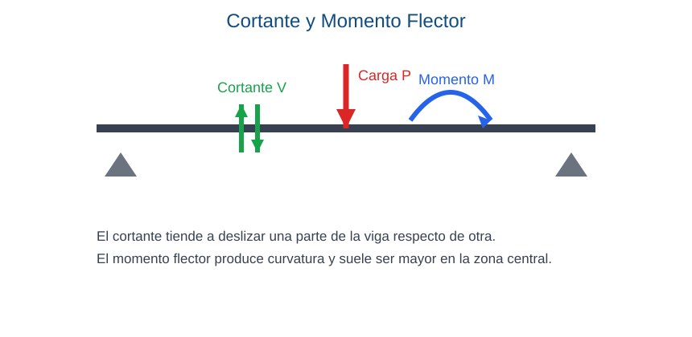

Capacidad: Identifica esfuerzo cortante y momento flector en piezas de plano medio. Representa leyes de esfuerzos en vigas simples.
Propósito: Reconocer esfuerzos internos y representar diagramas básicos en vigas simples.
Cuando una viga está cargada aparecen esfuerzos internos. El cortante se asocia al deslizamiento entre secciones y el momento flector a la curvatura del elemento.
Cuando una viga soporta cargas, en su interior no aparece un solo tipo de respuesta. El cortante intenta que una parte de la sección se deslice respecto de la otra. El momento flector provoca curvatura y hace que la pieza se doble.
Si la viga muestra un descenso en el centro, se está manifestando el efecto del momento flector. Si aparecen fisuras inclinadas cerca de los apoyos, puede haber problemas asociados al cortante.
| Cortante | Momento flector |
|---|---|
| Tiende a cortar | Tiende a curvar |
| Se analiza por secciones | Se asocia a la flexión |

Explicación del gráfico: la viga recibe una carga P. En una sección interna aparecen el cortante V, que intenta deslizar, y el momento M, que produce curvatura. La zona central suele ser importante para el momento flector.
Ejemplo aplicado: en una viga de techo cargada con tejas o chapas, el cortante suele ser significativo cerca de los apoyos y el momento flector en el tramo central.